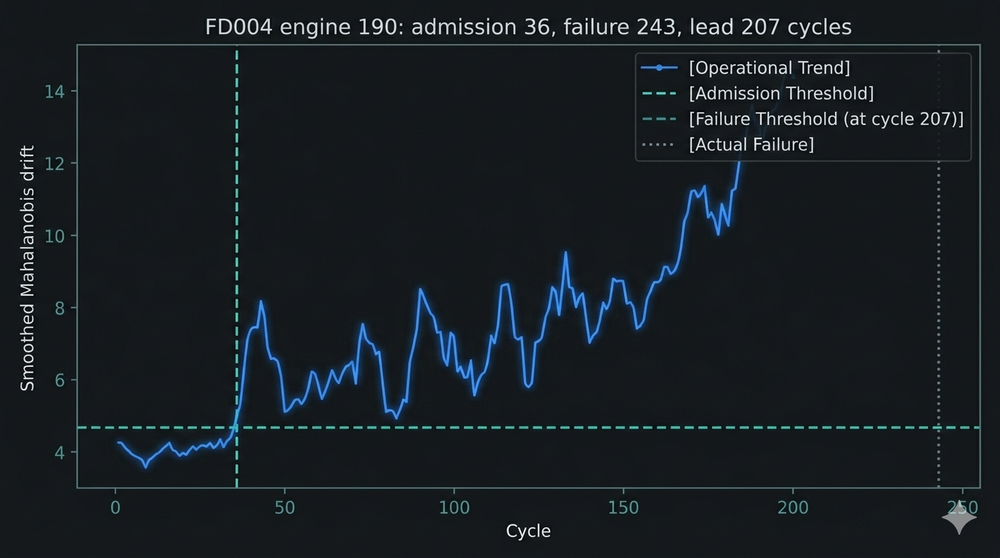

Neraium operates as a read-only signal interpretation layer across live telemetry environments. Persistent structural deviation is mapped for context, persistence, and governed operator review.
Live telemetry is normalized, compared across correlated signals, and mapped for deviation persistence before being surfaced as structured signal interpretation.
Tested across FD001 through FD004 datasets comprising 707 degradation trajectories. In the representative reference case, sustained deviation surfaced at cycle 36 with failure at cycle 243.

Outputs preserve signal lineage, temporal persistence, and contextual metadata. Interpretation artifacts are surfaced without asserting operational outcomes.
Neraium structures outputs for institutional review. Traceable artifacts preserve lineage, persistence, and context so governance remains explicit at the point of decision.
Neraium does not actuate, modify, override, or control infrastructure systems. Decision authority remains exclusively with operators.